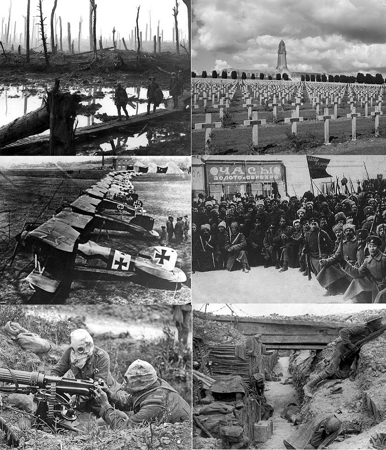

La primera guerra mundial
Un masacre en la historia

La Primera Guerra Mundial, también llamada anteriormente La Gran Guerra (antes de la Segunda Guerra Mundial), fue un conflicto militar
de carácter mundial, aunque centrado en Europa, que empezó el 28 de julio de 1914 y finalizó el 11 de noviembre de 1918, cuando Alemania aceptó las condiciones del
armisticio. Esta guerra recibió el calificativo de «mundial» porque se vieron involucradas todas las grandes potencias industriales y militares de la época, divididas en
dos alianzas. Por un lado, la Triple Alianza formada por las Potencias Centrales: el Imperio alemán y Austria-Hungría. Italia, que había sido miembro de la Triple
Alianza junto a Alemania y Austria-Hungría, no se unió a las Potencias Centrales, pues Austria, en contra de los términos pactados, fue la nación agresora que
desencadenó el conflicto.
Por otro lado, se encontraba la Triple Entente, formada por el Reino Unido, Francia y el Imperio ruso. Ambas alianzas sufrieron cambios y fueron varias las naciones que
acabarían ingresando en las filas de uno u otro bando según avanzaba la guerra: Italia, el Imperio del Japón y Estados Unidos se unieron a la Triple Entente, mientras el
Imperio otomano y el Reino de Bulgaria se unieron a las Potencias Centrales. Más de 70 millones de militares, de los cuales 60 millones eran europeos, se movilizaron y
combatieron en la entonces guerra más grande de la historia.
Consecuencias de la guerra
Tras el fin de la guerra, cuatro grandes imperios dejaron de existir: el alemán, el ruso, el austrohúngaro y el otomano. Los Estados sucesores de los dos primeros
perdieron una parte importante de sus antiguos territorios, mientras que los dos últimos se desmantelaron. El mapa de Europa y sus fronteras cambiaron por completo y
varias naciones se independizaron o se crearon. Al calor de la Primera Guerra Mundial se fraguó la revolución rusa, que concluyó con la creación del primer Estado en la
historia autodenominado socialista: la Unión Soviética.
Tras seis meses de negociaciones en la Conferencia de Paz de París, el 28 de junio de 1919 los países aliados firmaron el Tratado de Versalles con Alemania, y otros a lo
largo del siguiente año con cada una de las potencias derrotadas. Más de nueve millones de combatientes y siete millones de civiles perdieron la vida (el 1 % de la
población mundial), una cifra extraordinaria, dada la sofisticación tecnológica e industrial de los beligerantes.
Es el quinto conflicto más mortífero de la historia de la Humanidad. La convulsión que provocó la guerra allanó el camino a grandes cambios políticos, sociales y
económicos, con revoluciones de un carácter nunca visto en varias de las naciones involucradas. Se fundó la Sociedad de Naciones, con el objetivo de evitar que un
conflicto de tal magnitud se repitiese; sin embargo, dos décadas después estalló la Segunda Guerra Mundial. Entre sus razones se pueden señalar: el alza de los
nacionalismos, una cierta debilidad de los Estados democráticos, la humillación sentida por Alemania tras su derrota, las grandes crisis económicas y, sobre todo, el
auge del fascismo.
El tratado de Versalles
El tratado de Versalles fue un tratado que se firmó en 1919 en la ciudad de Versalles, Francia. En este tratado se establecieron las condiciones de paz y las reparaciones que Alemania debía pagar a los paises vencedores.
Reparaciones de guerra
Alemania debía pagar una gran cantidad de dinero a los paises vencedores como reparaciones de guerra. Esta situación llevó a Alemania a una crisis economica y social.
Conclusión
La primera guerra mundial fue una guerra que dejó una gran cantidad de muertos y heridos. La economia mundial se vio afectada y muchos paises quedaron destruidos. El tratado de Versalles fue un tratado que se firmó en 1919 en la ciudad de Versalles, Francia. En este tratado se establecieron las condiciones de paz y las reparaciones que Alemania debía pagar a los paises vencedores.